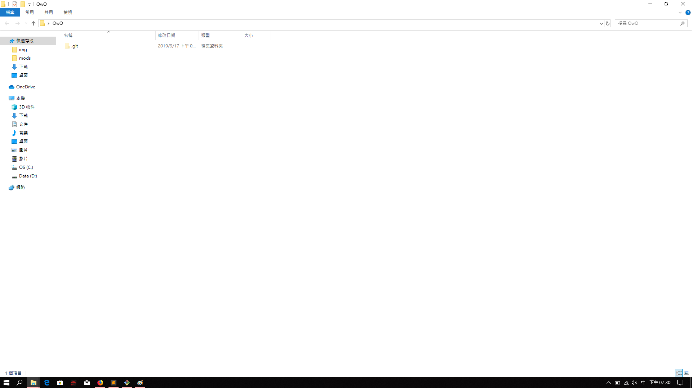

Git 版本控制
林弘祥
2019 / 09 / 18
在課程開始前..
先來下載今天要用的程式
首先先來說個關於合作小故事...
大家應該都有被迫跟人一起做
期末專題、 分組報告、 影音剪輯...的經驗吧
現在假設你們要做一個專案
然後你不幸要負責改code
老闆 / 導師 / 夥伴 / 自己
再加(改)個_____好了
: 這個不好再改個_____好了
: 再稍微改個_____好了
......
兩個月後...沒人知道啥是啥了
但...出Bug還是你要負責...
又或者你們要做合作一個專案
分工各做一部份 決定用___來共同存放資料
一切似乎都是如此的美好...
直到截止日逐步逼近......
當大家開始把各自的版本上傳時

誰他X的改了我的碼!
我的比較好!我三小時的努力...( ºΔº )
我
先
提
出
想
法
的
!

我
先
上
傳
的
!
這一切都是____的陰謀啦!
誰寫的!這結果不對啊!Σ(;ﾟдﾟ)
版本控制
透過前些的討論
想必大家都對版本控制有些想法了吧
特性
- 追蹤文件的改動
- 回復/比較 先前版本
- 同步/合併 開發版本
集中式版本控制

分散式版本控制

Git
分散式版本控制
安裝
都一直點"continue"就對了
先來設定環境
git config --global user.email "YourEmail\(OwO)"
git config --global user.name "YourName\(OwO)"
git config --global color.ui true縮寫別問我為啥
git config --global alias.co commit
git config --global alias.st status
git config --global alias.lg "log --color --graph --all --pretty=format:'%Cred%h%Creset -%C(yellow)%d%Creset %s %Cgreen(%cr) %C(bold blue)<%an>%Creset' --abbrev-commit --"有問題的話...就問git吧!!!
Git內置幫助
git help "command"練習
大家先來開一個資料夾
mkdir OwO初始化
git init目前大家的資料夾應該看起來像醬
讓我們先隨便新增一個檔案
touch hello.txt查看目前版本變動/過去版本演進
git status // -> git st
git log // -> git lg